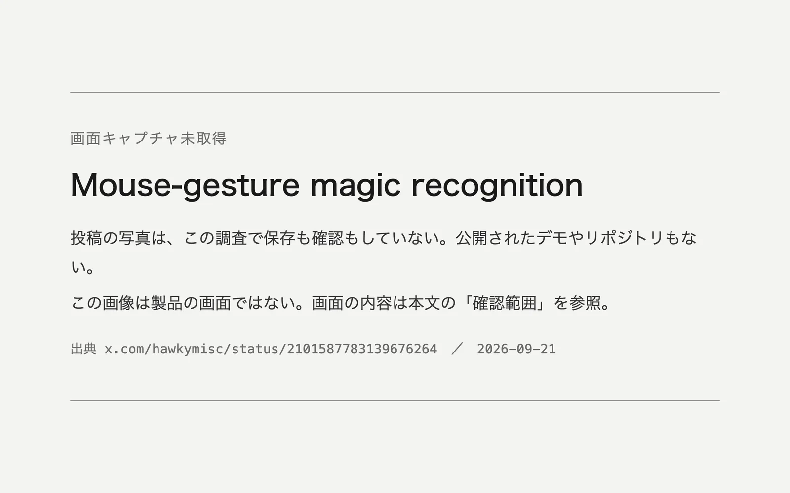

このUIがしていること
伝えられている内容が正しければ、文字ではない入力、つまり手で描いた軌跡を、決まった形のどれかに当てはめ、その結果でゲームの効果を起こしている。
- 入力が軌跡で、出力が魔法という、判定の結果がすぐ目に見える組み合わせである。判定が意図と違えば、違う魔法が出るので、その場で気づける。
- 「もう一度つくる」「最後に戻る」は、やり直しの手段があることをうかがわせる。ただし、動作は確かめられていない。
- 判定は、はっきり描かれた形に頼ると見られる。崩れた形や、どれにも似ていない軌跡をどう扱うかは、分からない。
- 写真は1枚で、描いてから効果が出るまでの流れは示されていない。
キャプチャ
{kind=link}

（原寸の画像を開く）見る箇所掲載した画像は「画面キャプチャ未取得」の告知で、製品の画面ではない。投稿の写真は、要約によれば、黄色で描かれた軌跡、日本語の魔法名と説明、「もう一度つくる」「最後に戻る」のボタンが写る
入力から画面の変化まで
-
判断への入力
マウスのドラッグの軌跡。作者の説明では、この軌跡をJevに渡す。軌跡をどういう形式で渡しているかは分からない。
-
Jevの判断
作者の説明では、軌跡が円・剣・盾のどれにあたるかを判定する。候補の全体、確率、どれにも当たらないときの扱いは分からない。
-
結果がUIをどう変えるか
要約によれば、ファンタジー調のゲーム画面に、描いた黄色の軌跡と、日本語の魔法名（「雷の光線」）と説明が出る。「もう一度つくる」「最後に戻る」のボタンがある。
- 判断型の見立て
- 不明出典から判断できない
- 作者の説明は形の候補から選ぶ判断のように読めるが、投稿の写真も画面も確認していない。
Jevとの適合
軌跡を、少数の決まった形のどれかに素早く当てはめる判断は、ゲームの操作の速さに合う。文字ではない入力に判断を使う試みとして、他の事例と異なる。ただし、軌跡の渡し方も、判定の精度も、確かめられていない。
確認範囲と未確認事項
根拠は限定的で、調査監査の評価はB（追加の確認が要る段階）。日本語の作者による投稿が根拠だが、投稿の写真は調査でも取得・確認されておらず、画面の内容は検索結果の要約が伝えるものにとどまる。写真は会場のスクリーンを撮った1枚とされ、描く・判定される・効果が出る、という時間の流れは示されていない。公開されたデモやリポジトリはない。このサイトでは画面を掲載していない。
- 確認済み作者の投稿が存在し、マウスの軌跡をJevで形として判定し魔法を発動させるデモを述べていること（調査の検索結果による）。それ以外に、このサイトで確認できた内容はない
- 未検証投稿の写真そのもの、画面の文字とボタン、軌跡の渡し方、形の候補と確率、当てはまらない軌跡の扱い、やり直しの動作、描いてから効果が出るまでの流れ、公開デモとリポジトリの有無
- 推定扱い質問型は不明として扱う。作者の説明からは、形の候補から1つを選ぶ判断のように見えるが、画面でも投稿の写真でも確かめていない
- 引用投稿の写真と画面は掲載していない。掲載した画像はこのサイトで作成した告知で、製品の画面ではない